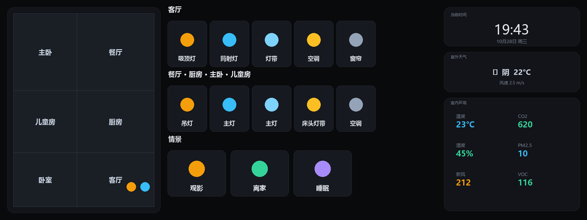

COLMO 智慧屏 → Home Assistant 全屋中控 改造教程
把一块「只能开关自家空调」的 COLMO 智慧屏，改造成一台挂在墙上的 Home Assistant 全屋智能中控屏。
项目综述
本项目并不改动 COLMO 屏的硬件，而是把它当作一台 Android 平板，用软件手段替换掉出厂锁定的桌面系统：
- 开启调试：通过 COLMO 屏隐藏的开发者入口，打开 USB / 网络 ADB 调试，获得对系统的控制权；
- 安装中控 App：在屏上安装 Home Assistant Companion（Android 客户端），让它以 Kiosk 全屏模式常驻；
- 页面布局：针对这块 1920×720 的条屏，用 picture-elements 定制一套按房间分组的 Lovelace 控制面板；
- 固定屏幕显示：屏保关闭、屏幕常亮，把 HA 设为默认桌面，冷启动/重启后自动直达中控，不留出厂界面；
- 调用自带的硬件：把屏上的毫米波雷达、板载温湿度 / VOC 传感器利用起来，实现「有人亮屏、无人息屏」的人感调光，并把环境数据实时上报回 HA。
整套改造是纯软件方案，可逆、不拆机、不刷机（无需 root 也可完成核心功能），改完就是一块真正全屋统一控制的中控屏。
最终效果

上图为通用化示例（房间名、设备、数据均为示例），实际效果取决于你的户型图与设备。
✅ 样例截图中所有房间名已通用化（客厅 / 餐厅 / 厨房 / 主卧 / 儿童房 / 卧室），不含任何真实昵称或私有信息。
目录
这是什么 / 适用人群
最终效果
前置条件
第一步：开启调试
第二步：安装 HA Companion
第三步：部署常驻脚本
第四步：构建中控面板
避坑清单
风险与免责声明
借助 WorkBuddy 复刻